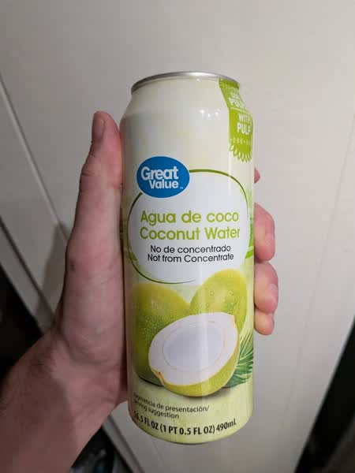

October 2026 · 16.5 fl oz (490 mL) · Still · Vietnam · Pasteurized · Added Sugar · Pulp · Not Organic
Ranked 21st of 37 coconut waters I have scored · below Goya Original (4.7) · above Goya Organics (4.6). See the full ranking.
Walmart brand option with a healthy dose of added sugar and some preservatives. A pulpy vietnamese water that bravely advertises 'not from concentrate', despite the fact that ready-to-drink coconut water is almost never from concentrate.
Surprisingly not as sweet as you'd expect a water with 9g added sugar per 8oz. Could be a result of using less sweet Vietnamese coconuts. Regardless, it doesn't wow me with its mild flavor and standard pulp. This one is, if nothing else, a crowd pleaser. But don't expect anything at all in terms of depth or complexity.
These coconuts are grown in habitats threatened by palm oil deforestation. If you find this site useful, consider donating to the Rainforest Action Network.